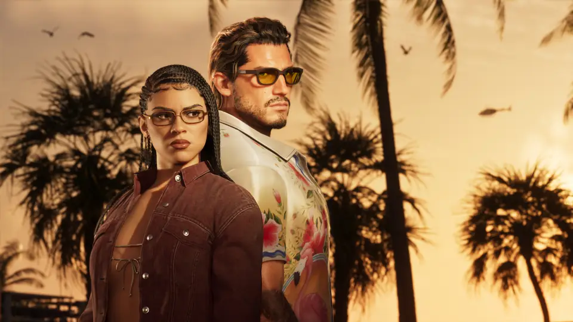

GTA 6 édition Ultimate : contenu complet et notre avis (vs Standard)

En bref : l'édition Ultimate coûte 99,99 €, 20 € de plus que la Standard (79,99 €). Elle ne change pas l'histoire : elle ajoute 5 véhicules, des armes personnalisées, des tenues, 4 boutiques réservées et une mission de collection de voitures. Tout se débloque au fil des chapitres.
Ce que contient l'édition Ultimate
Voici la liste complète publiée par Rockstar, résumée en français.
Véhicules
| Contenu | Ce que c'est |
|---|---|
| Grotti Cheetah ’95 | La sportive emblématique de Grotti, en livrée rétro-futuriste. Elle arrive tard dans l'histoire. |
| Vapid Dominator Buggy ’67 + Paradise Garage | Un buggy tout-terrain pour le mont Kalaga, avec un garage à Watson Bay équipé d'un casier d'armes et d'un dépôt pour les objets volés à revendre. |
| Véhicules de la planque de Jason | Une moto Dinka Enduro aux couleurs treillis et un kayak Crest. |
| Shitzu Squalo | Un bateau rose et bleu amarré à Washington Beach, avec une caisse d'armes explosives. |
| Kit « Retro Build » pour le Vapid Ganado | Des modifications musclées et rétro pour le pick-up de Jason. |
Toute la liste, filtrable : véhicules confirmés de GTA 6.
Armes
- Revolvers Hawk & Little Morgan : une version pour Jason, une pour Lucia, avec crosse gravée de palmiers et lunette.
- Variantes personnalisées : gravures sur le pistolet Girardi ES9 de Jason et le Klose K17 de Lucia.
Boutiques ouvertes seulement avec l'Ultimate
- Electric Fang Tattoo (Stockyard) : plus de 50 tatouages dessinés par le collectif d'artistes FAILE.
- Sara's Unisex Salon : coiffures, barbe pour Jason, maquillage et ongles pour Lucia.
- Stock 305 (Stockyard) : streetwear et tenues exclusives.
- Rideout Customs et One-Eyed Willie's (Lake Leonida) : deux ateliers de personnalisation, l'un pour les jantes et intérieurs façon « donk », l'autre pour le tout-terrain et la peinture à la main.
Tenues
- Vice City Style : tenues et tatouages exclusifs pour Jason et Lucia.
- Goodtime Gear : vêtements et accessoires inspirés de Macca the Gator, la mascotte d'une série télé de Leonida.
Activités
- Raid du PTT YOUNGIN$ : attaquer le repaire d'un gang de Southside Vice City pour récupérer des objets spéciaux.
- Collection de voitures de Wyman : une mission spéciale pour retrouver et restaurer des voitures anciennes abandonnées, pour le compte d'un collectionneur excentrique.
Notre avis : Standard ou Ultimate ?
- Prends la Standard si tu veux juste l'histoire. Tu ne rates aucune mission principale, et le bonus de précommande est le même.
- Prends l'Ultimate si tu aimes personnaliser ton personnage et tes véhicules : quatre boutiques et deux ateliers en plus, c'est ce qui se ressent le plus sur des dizaines d'heures. La mission de Wyman ajoute aussi du contenu à jouer.
- Attention : rien ne se débloque d'un coup. Ne t'attends pas à rouler en Cheetah dès la première heure.
Tu hésites encore ? Regarde ce que donne déjà le bonus de précommande.
Prix des deux éditions
| Édition | Prix | Ce qui est inclus |
|---|---|---|
| Standard | 79,99 € | Le jeu + bonus de précommande |
| Ultimate | 99,99 € | Le jeu + bonus de précommande + tout le contenu ci-dessus |
Les prix peuvent varier selon la boutique et les promotions.
Questions fréquentes
Combien coûte l'édition Ultimate de GTA 6 ?
99,99 €, contre 79,99 € pour l'édition Standard, soit 20 € d'écart.
L'édition Ultimate donne-t-elle un avantage dans l'histoire ?
Non, l'histoire est la même. L'Ultimate ajoute des véhicules, des armes personnalisées, des tenues, quatre boutiques exclusives et une mission spéciale de collection de voitures.
Le contenu Ultimate est-il disponible dès le début ?
Non. Rockstar explique que les bonus se débloquent au fil des chapitres de l'histoire.
L'édition Standard a-t-elle le Vintage Vice City Pack ?
Oui, si tu précommandes : le pack est un bonus de précommande, quelle que soit l'édition.
Sources
- Site officiel GTA VI : éditions, bonus et « Only in Leonida » (Rockstar Games)
- TechRadar France : ce que contiennent les éditions Standard et Ultimate
- WeArePlayStation : prix confirmés en euros
À lire aussi
Date, heure de sortie, prix et plateformes
GTA 6 sort le 19 novembre 2026 sur PS5 et Xbox Series X|S. Heure de sortie en France, Belgique, Suisse et Québec, prix des éditions, préchargement.
Bonus de précommande : Vintage Vice City Pack
Le Vintage Vice City Pack, bonus de précommande de GTA 6 : Vapid Stanier ’55 et son garage, tenues années 80 de Jason et Lucia, motif d'arme. Qui l'obtient et comment.
Tous les personnages de GTA 6
Qui sont Jason Duval et Lucia Caminos, les héros de GTA 6 ? Et Cal, Boobie, Dre'Quan, Real Dimez, Raul, Brian ? Les 8 personnages officiels expliqués, sans spoiler.
Carte de GTA 6 : les 6 régions de Leonida
La carte de GTA 6 expliquée : l'État de Leonida, Vice City, les Leonida Keys, Grassrivers, Port Gellhorn, Ambrosia et le mont Kalaga. Ce qu'on trouve dans chaque région.